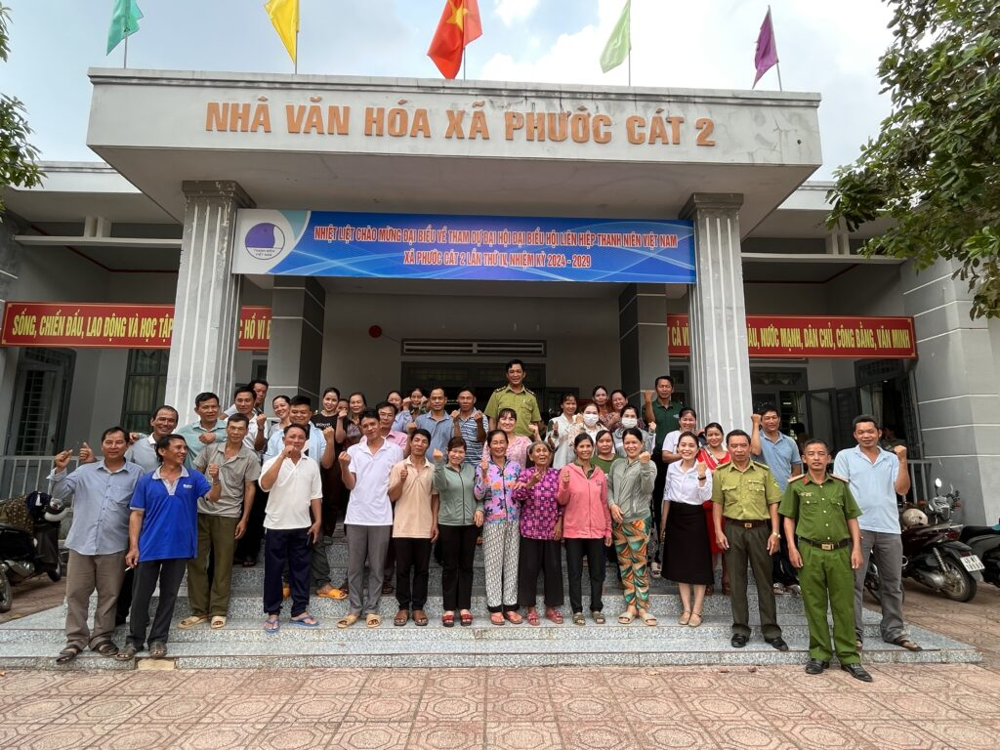
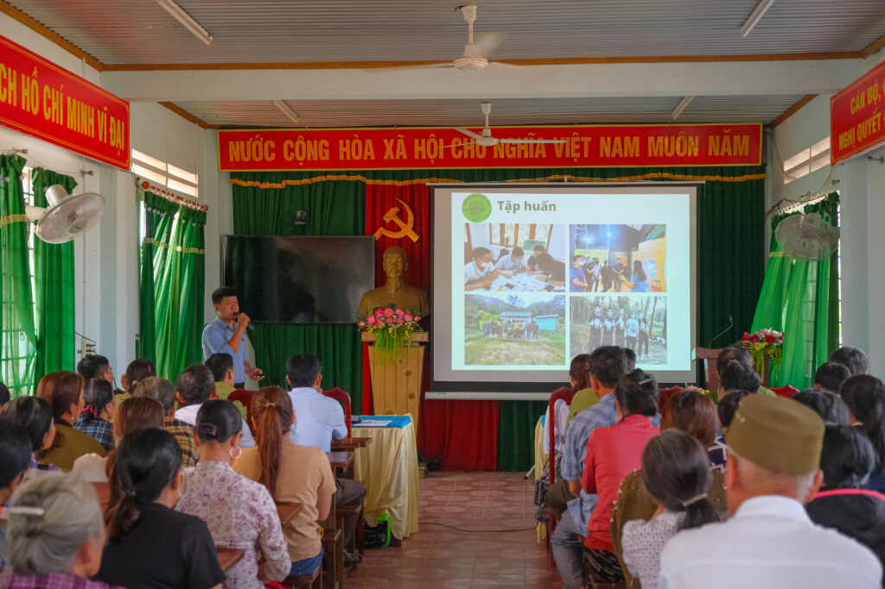

EVENT DAY TRAINING FOR COMMUNITY RANGER FORCE IN FOREST PROTECTION AT CAT TIEN NATIONAL PARK
Recently, at Conference Hall C of Cat Tien National Park, Save Vietnam’s Wildlife (SVW) Center
collaborated with Cat Tien National Park to organize a 'Deep Training Workshop on SMART Mobile
Application, Forest Protection Patrol Skills for Community Ranger Force at Cat Tien National Park

The purpose of the training was two-fold: firstly, to provide participants with knowledge about Cat
Tien National Park and biodiversity conservation efforts, fostering a deeper understanding and love
for the forest and nature, thereby encouraging active participation in forest protection among
community ranger forces. Secondly, the training aimed to equip community ranger forces with
essential skills for forest patrol activities, enhancing the effectiveness of forest management and
protection efforts at Cat Tien National Park.

Over the course of two days, nearly 100 participants attended the training, including 77 team
leaders, deputy team leaders, and members of the community ranger force from villages surrounding
the buffer zone of the national park.
The program was conducted successfully, characterized by lively interaction among participants and
focused, practical content. The training sessions delved into key topics that are pertinent to
forest management and protection, contributing significantly to the overall conservation efforts in
the area.